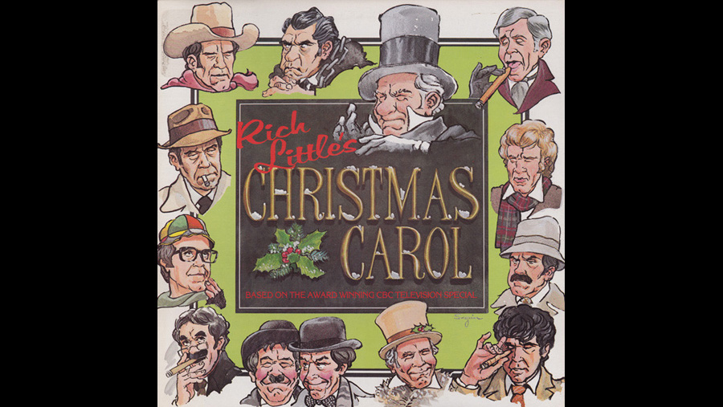

 |
||
 |
1978 |
 |
CAST |
||
|
||
Ebenezer Scrooge |
- |
W.C. Fields |
Bob Cratchit |
- |
Paul Lynde |
Mrs. Cratchit |
- |
Edith Bunker |
Tiny Tim Cratchit |
- |
Truman Capote |
Fred (Scrooge's nephew) |
- |
Johnny Carson |
Marley's Ghost |
- |
Richard Nixon |
Spirit of Christmas Past |
- |
Humphrey Bogart |
Spirit of Christmas Present |
- |
Peter Falk as Colombo |
Spirit of Christmas Future |
- |
Peter Sellers as Inspector Clouseau |
Old Fezziwig |
- |
Groucho Marx |
Dick Wilkins |
- |
Jimmy Stewart |
Businessman |
- |
John Wayne |
Businessman |
- |
George Burns |
Boy Outside Window |
- |
Jack Benny |
Businessman |
- |
James Mason |
Charity Solicitor |
- |
Stan Laurel |
Charity Solicitor |
- |
Oliver Hardy |
CREATIVE TEAM |
||
Director |
- |
Trevor Evans |
PRODUCTION
|
||
In this one-man show starring Rich Little, Ebeneezer Scrooge (played by Rich as W.C. Fields) hates Christmas, and it's up to the Ghosts of Christmas Past (played by Rich as Humphrey Bogart), Present (played by Rich as Columbo) and Future (played by Rich as Inspector Clouseau) to convince him otherwise. Little plays all the major characters in the film. His vast repertoire of characters are employed to act out the characters in this much-loved story. W.C. Fields is the sourest Scrooge you'll ever see. Paul Lynde as poor Bob Cratchit, Richard Nixon as Marley's Ghost and Humphrey Bogart as the ghost of Christmas past. Among the other 14 "famous faces" Rich uses are Johnny Carson, Groucho Marx, Edith Bunker, Truman Capote, Laurel and Hardy and more. Rich Little even sings some songs while in the character of W.C. Fields. |
||
|
|
|